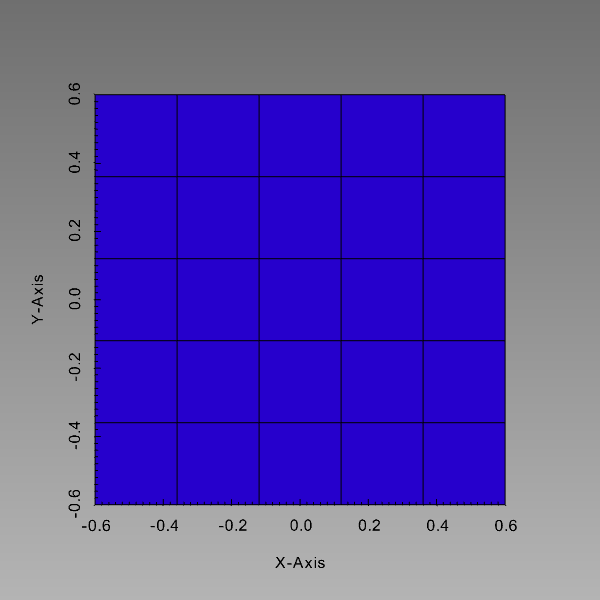

- filesThe name of the mesh files to read. They are automatically assigned ids starting with zero.
C++ Type:std::vector<MeshFileName>
Controllable:No
Description:The name of the mesh files to read. They are automatically assigned ids starting with zero.
- patternA double-indexed array starting with the upper-left corner
C++ Type:std::vector<std::vector<unsigned int>>
Controllable:No
Description:A double-indexed array starting with the upper-left corner
PatternedMesh
Creates a 2D mesh from a specified set of unique 'tiles' meshes and a two-dimensional pattern.
The PatternedMesh object is similar to TiledMesh but restricted to two dimensions but adds the ability to create a tile pattern from an arbitrary number of input meshes.
For example the input meshes shown in Figures 1 and 2 can be organized into a two dimensional pattern within the input file, as shown below, to create the pattern shown in Figure 3.
[Mesh<<<{"href": "../../syntax/Mesh/index.html"}>>>]
type = PatternedMesh
files = 'quad_mesh.e tri_mesh.e'
pattern = '0 0 0 0 0 0 0 0 0 0 0 0 0 0 ;
0 1 1 0 0 0 0 0 0 0 0 1 1 0 ;
0 1 1 1 0 0 0 0 0 0 1 1 1 0 ;
0 1 0 1 1 0 0 0 0 1 1 0 1 0 ;
0 1 0 0 1 1 0 0 1 1 0 0 1 0 ;
0 1 0 0 0 1 1 1 1 0 0 0 1 0 ;
0 1 0 0 0 0 1 1 0 0 0 0 1 0 ;
0 1 0 0 0 0 0 0 0 0 0 0 1 0 ;
0 1 0 0 0 0 0 0 0 0 0 0 1 0 ;
0 1 0 0 0 0 0 0 0 0 0 0 1 0 ;
0 1 0 0 0 0 0 0 0 0 0 0 1 0 ;
0 0 0 0 0 0 0 0 0 0 0 0 0 0'
bottom_boundary = 1
right_boundary = 2
top_boundary = 3
left_boundary = 4
y_width = 1.2
x_width = 1.2
parallel_type = replicated
[]
Fig 1: Input put mesh: quad_mesh.e

Fig 2: Input put mesh: tri_mesh.e

Fig 3: Resulting mesh created using PatternedMesh.
Input Parameters
- allow_renumberingTrueIf allow_renumbering=false, node and element numbers are kept fixed until deletion
Default:True
C++ Type:bool
Controllable:No
Description:If allow_renumbering=false, node and element numbers are kept fixed until deletion
- bottom_boundarybottom_boundaryname of the bottom (y) boundary
Default:bottom_boundary
C++ Type:BoundaryName
Controllable:No
Description:name of the bottom (y) boundary
- ghosting_patch_sizeThe number of nearest neighbors considered for ghosting purposes when 'iteration' patch update strategy is used. Default is 5 * patch_size.
C++ Type:unsigned int
Controllable:No
Description:The number of nearest neighbors considered for ghosting purposes when 'iteration' patch update strategy is used. Default is 5 * patch_size.
- left_boundaryleft_boundaryname of the left (x) boundary
Default:left_boundary
C++ Type:BoundaryName
Controllable:No
Description:name of the left (x) boundary
- parallel_typeDEFAULTDEFAULT: Use libMesh::ReplicatedMesh unless --distributed-mesh is specified on the command line REPLICATED: Always use libMesh::ReplicatedMesh DISTRIBUTED: Always use libMesh::DistributedMesh
Default:DEFAULT
C++ Type:MooseEnum
Controllable:No
Description:DEFAULT: Use libMesh::ReplicatedMesh unless --distributed-mesh is specified on the command line REPLICATED: Always use libMesh::ReplicatedMesh DISTRIBUTED: Always use libMesh::DistributedMesh
- right_boundaryright_boundaryname of the right (x) boundary
Default:right_boundary
C++ Type:BoundaryName
Controllable:No
Description:name of the right (x) boundary
- skip_refine_when_use_splitTrueTrue to skip uniform refinements when using a pre-split mesh.
Default:True
C++ Type:bool
Controllable:No
Description:True to skip uniform refinements when using a pre-split mesh.
- top_boundarytop_boundaryname of the top (y) boundary
Default:top_boundary
C++ Type:BoundaryName
Controllable:No
Description:name of the top (y) boundary
- x_width0The tile width in the x direction
Default:0
C++ Type:double
Unit:(no unit assumed)
Controllable:No
Description:The tile width in the x direction
- y_width0The tile width in the y direction
Default:0
C++ Type:double
Unit:(no unit assumed)
Controllable:No
Description:The tile width in the y direction
- z_width0The tile width in the z direction
Default:0
C++ Type:double
Unit:(no unit assumed)
Controllable:No
Description:The tile width in the z direction
Optional Parameters
- add_nodeset_idsThe listed nodeset ids will be assumed valid for the mesh. This permits setting up boundary restrictions for node initially containing no sides. Names for this nodesets may be provided using add_nodeset_names. In this case this list and add_nodeset_names must contain the same number of items.
C++ Type:std::vector<short>
Controllable:No
Description:The listed nodeset ids will be assumed valid for the mesh. This permits setting up boundary restrictions for node initially containing no sides. Names for this nodesets may be provided using add_nodeset_names. In this case this list and add_nodeset_names must contain the same number of items.
- add_nodeset_namesThe listed nodeset names will be assumed valid for the mesh. This permits setting up boundary restrictions for nodesets initially containing no sides. Ids for this nodesets may be provided using add_nodesets_ids. In this case this list and add_nodesets_ids must contain the same number of items.
C++ Type:std::vector<BoundaryName>
Controllable:No
Description:The listed nodeset names will be assumed valid for the mesh. This permits setting up boundary restrictions for nodesets initially containing no sides. Ids for this nodesets may be provided using add_nodesets_ids. In this case this list and add_nodesets_ids must contain the same number of items.
- add_sideset_idsThe listed sideset ids will be assumed valid for the mesh. This permits setting up boundary restrictions for sidesets initially containing no sides. Names for this sidesets may be provided using add_sideset_names. In this case this list and add_sideset_names must contain the same number of items.
C++ Type:std::vector<short>
Controllable:No
Description:The listed sideset ids will be assumed valid for the mesh. This permits setting up boundary restrictions for sidesets initially containing no sides. Names for this sidesets may be provided using add_sideset_names. In this case this list and add_sideset_names must contain the same number of items.
- add_sideset_namesThe listed sideset names will be assumed valid for the mesh. This permits setting up boundary restrictions for sidesets initially containing no sides. Ids for this sidesets may be provided using add_sideset_ids. In this case this list and add_sideset_ids must contain the same number of items.
C++ Type:std::vector<BoundaryName>
Controllable:No
Description:The listed sideset names will be assumed valid for the mesh. This permits setting up boundary restrictions for sidesets initially containing no sides. Ids for this sidesets may be provided using add_sideset_ids. In this case this list and add_sideset_ids must contain the same number of items.
- add_subdomain_idsThe listed subdomain ids will be assumed valid for the mesh. This permits setting up subdomain restrictions for subdomains initially containing no elements, which can occur, for example, in additive manufacturing simulations which dynamically add and remove elements. Names for this subdomains may be provided using add_subdomain_names. In this case this list and add_subdomain_names must contain the same number of items.
C++ Type:std::vector<unsigned short>
Controllable:No
Description:The listed subdomain ids will be assumed valid for the mesh. This permits setting up subdomain restrictions for subdomains initially containing no elements, which can occur, for example, in additive manufacturing simulations which dynamically add and remove elements. Names for this subdomains may be provided using add_subdomain_names. In this case this list and add_subdomain_names must contain the same number of items.
- add_subdomain_namesThe listed subdomain names will be assumed valid for the mesh. This permits setting up subdomain restrictions for subdomains initially containing no elements, which can occur, for example, in additive manufacturing simulations which dynamically add and remove elements. IDs for this subdomains may be provided using add_subdomain_ids. Otherwise IDs are automatically assigned. In case add_subdomain_ids is set too, both lists must contain the same number of items.
C++ Type:std::vector<SubdomainName>
Controllable:No
Description:The listed subdomain names will be assumed valid for the mesh. This permits setting up subdomain restrictions for subdomains initially containing no elements, which can occur, for example, in additive manufacturing simulations which dynamically add and remove elements. IDs for this subdomains may be provided using add_subdomain_ids. Otherwise IDs are automatically assigned. In case add_subdomain_ids is set too, both lists must contain the same number of items.
Pre-Declaration Of Future Mesh Sub-Entities Parameters
- alpha_rotationThe number of degrees that the domain should be alpha-rotated using the Euler angle ZXZ convention from https://en.wikipedia.org/wiki/Euler_angles#Rotation_matrix in order to align with a canonical physical space of your choosing.
C++ Type:double
Unit:(no unit assumed)
Controllable:No
Description:The number of degrees that the domain should be alpha-rotated using the Euler angle ZXZ convention from https://en.wikipedia.org/wiki/Euler_angles#Rotation_matrix in order to align with a canonical physical space of your choosing.
- beta_rotationThe number of degrees that the domain should be beta-rotated using the Euler angle ZXZ convention from https://en.wikipedia.org/wiki/Euler_angles#Rotation_matrix in order to align with a canonical physical space of your choosing.
C++ Type:double
Unit:(no unit assumed)
Controllable:No
Description:The number of degrees that the domain should be beta-rotated using the Euler angle ZXZ convention from https://en.wikipedia.org/wiki/Euler_angles#Rotation_matrix in order to align with a canonical physical space of your choosing.
- gamma_rotationThe number of degrees that the domain should be gamma-rotated using the Euler angle ZXZ convention from https://en.wikipedia.org/wiki/Euler_angles#Rotation_matrix in order to align with a canonical physical space of your choosing.
C++ Type:double
Unit:(no unit assumed)
Controllable:No
Description:The number of degrees that the domain should be gamma-rotated using the Euler angle ZXZ convention from https://en.wikipedia.org/wiki/Euler_angles#Rotation_matrix in order to align with a canonical physical space of your choosing.
- length_unitHow much distance one mesh length unit represents, e.g. 1 cm, 1 nm, 1 ft, 5inches
C++ Type:std::string
Controllable:No
Description:How much distance one mesh length unit represents, e.g. 1 cm, 1 nm, 1 ft, 5inches
- up_directionSpecify what axis corresponds to the up direction in physical space (the opposite of the gravity vector if you will). If this parameter is provided, we will perform a single 90 degree rotation of the domain--if the provided axis is 'x' or 'z', we will not rotate if the axis is 'y'--such that a point which was on the provided axis will now lie on the y-axis, e.g. the y-axis is our canonical up direction. If you want finer grained control than this, please use the 'alpha_rotation', 'beta_rotation', and 'gamma_rotation' parameters.
C++ Type:MooseEnum
Controllable:No
Description:Specify what axis corresponds to the up direction in physical space (the opposite of the gravity vector if you will). If this parameter is provided, we will perform a single 90 degree rotation of the domain--if the provided axis is 'x' or 'z', we will not rotate if the axis is 'y'--such that a point which was on the provided axis will now lie on the y-axis, e.g. the y-axis is our canonical up direction. If you want finer grained control than this, please use the 'alpha_rotation', 'beta_rotation', and 'gamma_rotation' parameters.
Transformations Relative To Parent Application Frame Of Reference Parameters
- coord_blockBlock IDs for the coordinate systems. If this parameter is specified, then it must encompass all the subdomains on the mesh.
C++ Type:std::vector<SubdomainName>
Controllable:No
Description:Block IDs for the coordinate systems. If this parameter is specified, then it must encompass all the subdomains on the mesh.
- coord_typeXYZType of the coordinate system per block param
Default:XYZ
C++ Type:MultiMooseEnum
Controllable:No
Description:Type of the coordinate system per block param
- rz_coord_axisYThe rotation axis (X | Y) for axisymmetric coordinates
Default:Y
C++ Type:MooseEnum
Controllable:No
Description:The rotation axis (X | Y) for axisymmetric coordinates
- rz_coord_blocksBlocks using general axisymmetric coordinate systems
C++ Type:std::vector<SubdomainName>
Controllable:No
Description:Blocks using general axisymmetric coordinate systems
- rz_coord_directionsAxis directions for each block in 'rz_coord_blocks'
C++ Type:std::vector<libMesh::VectorValue<double>>
Unit:(no unit assumed)
Controllable:No
Description:Axis directions for each block in 'rz_coord_blocks'
- rz_coord_originsAxis origin points for each block in 'rz_coord_blocks'
C++ Type:std::vector<libMesh::Point>
Controllable:No
Description:Axis origin points for each block in 'rz_coord_blocks'
Coordinate System Parameters
- build_all_side_lowerd_meshFalseTrue to build the lower-dimensional mesh for all sides.
Default:False
C++ Type:bool
Controllable:No
Description:True to build the lower-dimensional mesh for all sides.
- construct_node_list_from_side_listTrueWhether or not to generate nodesets from the sidesets (usually a good idea).
Default:True
C++ Type:bool
Controllable:No
Description:Whether or not to generate nodesets from the sidesets (usually a good idea).
Automatic Definition Of Mesh Element Sides Entities Parameters
- centroid_partitioner_directionSpecifies the sort direction if using the centroid partitioner. Available options: x, y, z, radial
C++ Type:MooseEnum
Controllable:No
Description:Specifies the sort direction if using the centroid partitioner. Available options: x, y, z, radial
- partitionerdefaultSpecifies a mesh partitioner to use when splitting the mesh for a parallel computation.
Default:default
C++ Type:MooseEnum
Controllable:No
Description:Specifies a mesh partitioner to use when splitting the mesh for a parallel computation.
Partitioning Parameters
- control_tagsAdds user-defined labels for accessing object parameters via control logic.
C++ Type:std::vector<std::string>
Controllable:No
Description:Adds user-defined labels for accessing object parameters via control logic.
- enableTrueSet the enabled status of the MooseObject.
Default:True
C++ Type:bool
Controllable:No
Description:Set the enabled status of the MooseObject.
- nemesisFalseIf nemesis=true and file=foo.e, actually reads foo.e.N.0, foo.e.N.1, ... foo.e.N.N-1, where N = # CPUs, with NemesisIO.
Default:False
C++ Type:bool
Controllable:No
Description:If nemesis=true and file=foo.e, actually reads foo.e.N.0, foo.e.N.1, ... foo.e.N.N-1, where N = # CPUs, with NemesisIO.
Advanced Parameters
- max_leaf_size10The maximum number of points in each leaf of the KDTree used in the nearest neighbor search. As the leaf size becomes larger,KDTree construction becomes faster but the nearest neighbor searchbecomes slower.
Default:10
C++ Type:unsigned int
Controllable:No
Description:The maximum number of points in each leaf of the KDTree used in the nearest neighbor search. As the leaf size becomes larger,KDTree construction becomes faster but the nearest neighbor searchbecomes slower.
- patch_size40The number of nodes to consider in the NearestNode neighborhood.
Default:40
C++ Type:unsigned int
Controllable:No
Description:The number of nodes to consider in the NearestNode neighborhood.
- patch_update_strategyneverHow often to update the geometric search 'patch'. The default is to never update it (which is the most efficient but could be a problem with lots of relative motion). 'always' will update the patch for all secondary nodes at the beginning of every timestep which might be time consuming. 'auto' will attempt to determine at the start of which timesteps the patch for all secondary nodes needs to be updated automatically.'iteration' updates the patch at every nonlinear iteration for a subset of secondary nodes for which penetration is not detected. If there can be substantial relative motion between the primary and secondary surfaces during the nonlinear iterations within a timestep, it is advisable to use 'iteration' option to ensure accurate contact detection.
Default:never
C++ Type:MooseEnum
Controllable:No
Description:How often to update the geometric search 'patch'. The default is to never update it (which is the most efficient but could be a problem with lots of relative motion). 'always' will update the patch for all secondary nodes at the beginning of every timestep which might be time consuming. 'auto' will attempt to determine at the start of which timesteps the patch for all secondary nodes needs to be updated automatically.'iteration' updates the patch at every nonlinear iteration for a subset of secondary nodes for which penetration is not detected. If there can be substantial relative motion between the primary and secondary surfaces during the nonlinear iterations within a timestep, it is advisable to use 'iteration' option to ensure accurate contact detection.